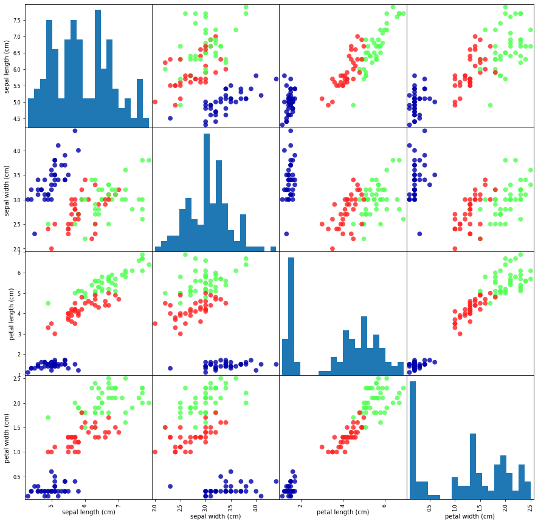
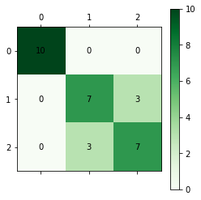
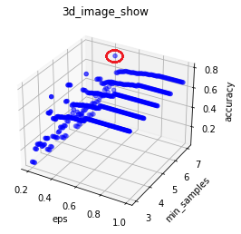
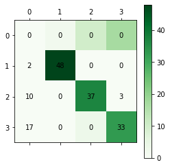
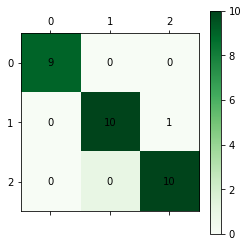
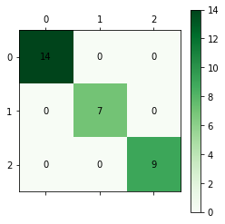
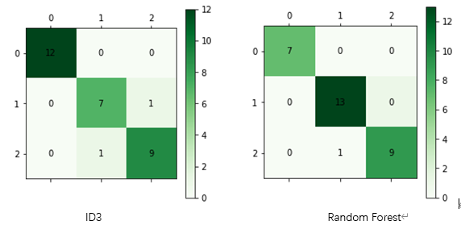

真正(True Positive , TP)：被模型预测为正的正样本
假正(False Positive , FP)：被模型预测为正的负样本
假负(False Negative , FN)：被模型预测为负的正样本
真负(True Negative , TN)：被模型预测为负的负样本

def getdata():
train_data=load_iris()
data=train_data['data']
labels=train_data['target'].reshape(-1,1)
total_data=np.hstack((data,labels))
np.random.shuffle(total_data)
train=total_data[0:120,:-1]
test=total_data[120:,:-1]
train_label=total_data[0:120,-1].reshape(-1,1)
test_label=total_data[120:,-1].reshape(-1,1)
return data,labels,train,test,train_label,test_label
from sklearn.preprocessing import StandardScaler
scaler = StandardScaler()
scaler.fit(train)
train=scaler.transform(train)
# 4.对测试数据进行归一化处理
test=scaler.transform(test)
真正(True Positive , TP)：被模型预测为正的正样本
假正(False Positive , FP)：被模型预测为正的负样本
假负(False Negative , FN)：被模型预测为负的正样本
真负(True Negative , TN)：被模型预测为负的负样本
对鸢尾花数据集每个特征的分布情况，并对4个特征进行关联性分析，得到如下结果

对角线部分: 核密度估计图（Kernel Density Estimation），就是用来看某一个变量分布情况，横轴对应着该变量的值，纵轴对应着该变量的密度（可以理解为出现频次）。可以观察到speal的长宽基本符合高斯分布，而petal则不符合。
非对角线部分：两个变量之间分布的关联散点图。将任意两个变量进行配对，以其中一个为横坐标，另一个为纵坐标，将所有的数据点绘制在图上，用来衡量两个变量的关联度。可以观察到数据集的可分度是比较强的，任意拿出两个特征，都存在着明显的边界，证明该数据集是存在分类依据的，我们的目的就是通过机器学习方法找出这种依据。从数学角度看，就是找到一个符合这种分布的输入输出映射关系。
算法步骤
手肘法确定$K$值
由于K-Means是无监督方法，事先也必须指定要聚类成多少类别。如果对于一个完全陌生的分类任务，实现不知道如何确定有多少类。
可以通过手肘法,当k小于真实聚类数时，由于k的增大会大幅增加每个簇的聚合程度，故SSE的下降幅度会很大，而当k到达真实聚类数时，再增加k所得到的聚合程度回报会迅速变小，所以SSE的下降幅度会骤减，然后随着k值的继续增大而趋于平缓，也就是说SSE和k的关系图是一个手肘的形状，而这个肘部对应的k值就是数据的真实聚类数。
核心指标：SSE，误差平方和 $SSE = \sum_{i=1}^k \sum_{p \in C_i}|p - m_i|^2$

从上图可以看出当K=3时，SSE下降速度明显变缓可以认为K的合适取值为3，与预期相符合
实验结果
混淆矩阵

分类指标
| cluster | precision | recall | f1-score | support |
|---|---|---|---|---|
| 0 | 1.00 | 1.00 | 1.00 | 10 |
| 1 | 0.7 | 0.7 | 0.7 | 10 |
| 2 | 0.7 | 0.7 | 0.7 | 10 |
算法步骤
DBSCAN的核心思想是从某个核心点出发，不断向密度可达的区域扩张，从而得到一个包含核心点和边界点的最大化区域，区域中任意两点密度相连。由于其概念较多，不方便一一赘述，下面只列出简要的伪码
DBSCAN(D, eps, MinPts)
C = 0
for each unvisited point P in dataset D
mark P as visited
NeighborPts = regionQuery(P, eps) //计算这个点的邻域
if sizeof(NeighborPts) < MinPts
mark P as NOISE
else
C = next cluster //作为核心点，根据该点创建一个新类簇
expandCluster(P, NeighborPts, C, eps, MinPts) //根据该核心点扩展类别
expandCluster(P, NeighborPts, C, eps, MinPts)
add P to cluster C //扩展类别，核心点先加入
for each point P' in NeighborPts
if P' is not visited
mark P' as visited
NeighborPts' = regionQuery(P', eps) //如果该点为核心点，则扩充该类别
if sizeof(NeighborPts') >= MinPts
NeighborPts = NeighborPts joined with NeighborPts'
if P' is not yet member of any cluster //如果邻域内点不是核心点，并且无类别，比如噪音数据，则加入此类别
add P' to cluster C
regionQuery(P, eps) //计算点P的邻域
return all points within P's eps-neighborhood
实验过程及结果
调参数$eps \in [0.2, 1.0] step=0.01 $ 和$min_samples \in [3,8] step=1$,选择得到最大准确率的模型，如下图所示，红色点为最高点，坐标为(0.42, 5, 0.786)

混淆矩阵(其中0实际上是-1，即噪声类，123分别为鸢尾花的三类)

分类指标
| cluster | precision | recall | f1-score | support |
|---|---|---|---|---|
| 0 | 1.00 | 0.96 | 0.98 | 50 |
| 1 | 1.00 | 0.74 | 0.85 | 50 |
| 2 | 0.92 | 0.66 | 0.77 | 50 |
方案评价
实验不同的高斯核函数测试准确率
| kernel | precision | penalty | gamma |
|---|---|---|---|
| RBF | 0.92 | 0.8 | auto |
| Linear | 0.97 | 0.8 | auto |
| Poly | 0.92 | 0.8 | auto |
| Sigmoid | 0.88 | 0.8 | auto |
混淆矩阵(linear)

分类指标
| cluster | precision | recall | f1-score | support |
|---|---|---|---|---|
| 0 | 1.00 | 1.0 | 1.0 | 9 |
| 1 | 1.00 | 0.91 | 0.95 | 11 |
| 2 | 0.91 | 1.00 | 0.95 | 10 |
算法
class IrisNet(nn.Module):
def __init__(self):
super(IrisNet,self).__init__()
self.fc = nn.Sequential( #添加神经元以及激活函数
nn.Linear(4,18),
nn.ReLU(),
nn.Linear(18,10),
nn.ReLU(),
nn.Linear(10,3),
nn.Dropout(0.2)
)
self.mse=nn.CrossEntropyLoss()
self.optim=torch.optim.Adam(params=self.parameters(),lr=0.02)
def forward(self,inputs):
outputs=self.fc(inputs)
return outputs
def train(self,x,label):
out=self.forward(x) #正向传播
loss=self.mse(out,label) #根据正向传播计算损失
self.optim.zero_grad()#梯度清零
loss.backward()#计算梯度
self.optim.step()#应用梯度更新参数
def test(self,test_):
return self.fc(test_)
网络结构可视化

混淆矩阵(linear)

分类指标
| cluster | precision | recall | f1-score | support |
|---|---|---|---|---|
| 0 | 1.00 | 1.00 | 1.00 | 14 |
| 1 | 1.00 | 1.00 | 1.00 | 7 |
| 2 | 1.00 | 1.00 | 1.00 | 9 |
方案评价：本实验报告神经网络取得了最好的效果，分类准确率达到了100%。原因一方面是神经网络的强大性能，另一方面是数据集比较小，有可能过拟合。
算法思想
K值选择
交叉验证(Cross-validation)

混淆矩阵

评价指标
| cluster | precision | recall | f1-score | support |
|---|---|---|---|---|
| 0 | 1.00 | 1.00 | 1.00 | 10 |
| 1 | 0.89 | 1.00 | 0.94 | 8 |
| 2 | 1.00 | 0.92 | 0.96 | 12 |
算法思想
逻辑斯谛回归（logistic regression）属于对数线性模型，所以也被称为对数几率回归。这里要注意，虽然带有回归的字眼，但是该模型是一种分类算法，逻辑斯谛回归是一种线性分类器，针对的是线性可分问题。
利用logistic回归进行分类的主要思想是：根据现有的数据对分类边界线建立回归公式，以此进行分类。这里的“回归”一词源于最佳拟合，表示要找到最佳拟合参数集。
多项逻辑斯蒂回归模型实质上是一个条件概率分布
使用极大似然估计法估计模型参数$w,b$，问题转化为以对数似然函数为目标函数的最优化问题，可以采用梯度下降法迭代。
混淆矩阵

评价指标
| cluster | precision | recall | f1-score | support |
|---|---|---|---|---|
| 0 | 1.00 | 1.00 | 1.00 | 9 |
| 1 | 1.00 | 0.90 | 0.95 | 10 |
| 2 | 0.92 | 1.00 | 0.96 | 11 |
决策树算法思想(以ID3算法为例)
随机森林
实验结果

统计表
| Algorithm | precision | recall | f1-score |
|---|---|---|---|
| K-Means | 0.8 | 0.8 | 0.8 |
| DBSCAN | 0.97 | 0.79 | 0.87 |
| SVM-Linear | 0.97 | 0.97 | 0.97 |
| NN | 1.00 | 1.00 | 1.00 |
| KNN | 0.97 | 0.97 | 0.97 |
| Logistic | 0.97 | 0.97 | 0.97 |
| ID3 | 0.93 | 0.93 | 0.93 |
| Random Forest | 0.97 | 0.97 | 0.97 |
统计图

从效果上看，在所选择的8种机器学习算法中，神经网络(NN)达到了最好的分类效果，也有一些算法不尽人意如DBSCN,通过各种调参还是出现了很高的噪声率。
从算法-数据集的匹配性上看，在这次实验中，大多数算法都能达到95%以上的精准率，原因是这些算法对iris数据集表现出了有效性，部分算法效果不好可能是自身局限性，并不适合iris数据集的特征分布。比如DBSCAN算法，当两类数据点紧密相连但又线性可分时，可能分类效果就比较差，而其他算法效果可能比较好。在数据可视化部分可以看到iris数据集特征分布有这种特性。